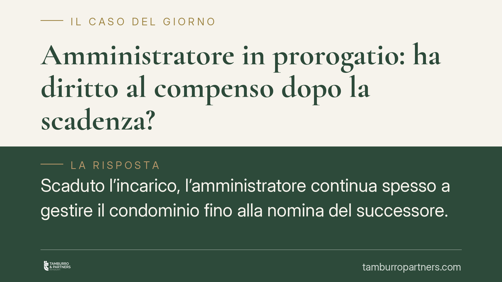

Amministratore in prorogatio: ha diritto al compenso dopo la scadenza?
Scaduto l'incarico, l'amministratore continua spesso a gestire il condominio fino alla nomina del successore. Ma per quel periodo gli spetta un compenso? Una recente pronuncia di merito del Tribunale di Napoli risponde in modo negativo, salvo diverso accordo con l'assemblea. Vediamo cosa cambia per condomini e professionisti.

Il caso
Alla scadenza dell'incarico, l'amministratore non sempre viene sostituito subito. Nell'attesa, continua a occuparsi delle questioni urgenti per evitare danni al condominio. Qui nasce la domanda pratica: quel lavoro va retribuito?
Il Tribunale di Napoli (sentenza di merito n. 5036/2025, non massimata) ha ritenuto che le attività svolte in questa fase non diano automaticamente diritto a un compenso ulteriore rispetto a quello pattuito per l'incarico ormai scaduto. Si tratta di una decisione di primo grado, non di un orientamento consolidato della Corte di Cassazione: va quindi letta con la dovuta cautela.
Inquadramento normativo
Occorre distinguere due piani.
Il primo riguarda la durata dell'incarico. L'art. 1129, comma 10, cod. civ. fissa in un anno la durata dell'amministratore e prevede il rinnovo tacito per un ulteriore anno. Questo è il meccanismo espressamente codificato.
Il secondo piano è la cosiddetta *prorogatio*: la prosecuzione dei poteri dell'amministratore oltre la scadenza, fino alla nomina del successore. Attenzione: questo istituto non è previsto in modo espresso dall'art. 1129 c.c.. È frutto di elaborazione giurisprudenziale, costruita in analogia con il regime degli organi societari, allo scopo di evitare vuoti di gestione.
Alla cessazione dell'incarico, l'art. 1129, comma 8, cod. civ. impone all'amministratore di consegnare la documentazione del condominio e di eseguire le attività urgenti per evitare pregiudizi agli interessi comuni. La norma, però, non contiene alcuna clausola testuale che escluda il diritto al compenso per tali attività. L'affermazione per cui quelle attività non sono retribuite è quindi un'interpretazione del Tribunale, non una previsione di legge.
Sul fronte economico va ricordato l'art. 1129, comma 14, cod. civ. (introdotto dalla L. 220/2012): all'atto dell'accettazione e del rinnovo dell'incarico, l'amministratore deve specificare analiticamente il proprio compenso, a pena di nullità della nomina. Questo elemento rafforza la lettura secondo cui il compenso richiede un'indicazione espressa e preventiva.
Perché la decisione nega il compenso
Il ragionamento del Tribunale muove da un principio: il compenso dell'amministratore deve essere determinato in modo espresso e preventivo. Scaduto anche il periodo di rinnovo tacito, l'amministratore in *prorogatio* opera in forza di un dovere di continuità, non di un nuovo mandato retribuito. Per ottenere un compenso aggiuntivo serve quindi un nuovo accordo espresso con l'assemblea.
Resta una possibile lettura alternativa. Chi sostiene la pretesa dell'amministratore può invocare l'art. 2041 cod. civ. sull'ingiustificato arricchimento: il condominio beneficerebbe di prestazioni rese nel proprio interesse senza corrispondere nulla. È però una strada tutt'altro che automatica, perché l'azione ex art. 2041 c.c. ha natura residuale e presuppone requisiti rigorosi.
Implicazioni pratiche
Per l'amministratore uscente: contare sulla retribuzione per le attività di fine incarico è rischioso. In assenza di un accordo, la pretesa può essere respinta.
Per il condominio: il periodo di *prorogatio* non genera, di regola, costi aggiuntivi automatici. Ma l'assemblea ha interesse a definire tempi e condizioni della transizione, per evitare contenziosi e gestioni di fatto prolungate.
Cosa fare in concreto
- Verificare sempre la data di scadenza dell'incarico e del rinnovo tacito annuale, per sapere quando la gestione entra in *prorogatio*.
- Convocare l'assemblea per la nomina del nuovo amministratore con congruo anticipo rispetto alla scadenza, riducendo al minimo la fase di prosecuzione.
- Mettere per iscritto, ove si voglia riconoscere un compenso per le attività di transizione, un accordo espresso approvato dall'assemblea, con importo analitico.
- Documentare le attività urgenti effettivamente svolte nella fase di passaggio, utili in caso di eventuale azione residuale ex art. 2041 c.c.
- Formalizzare la consegna della documentazione al subentrante con verbale, ai sensi dell'art. 1129, comma 8, cod. civ.
Disclaimer
Contributo informativo a cura di Tamburro & Partners - Avv. Giuseppe Tamburro. Non costituisce parere legale.
Ogni condominio ha una storia a sé.
Se gestisci un'amministrazione e vuoi un confronto su una specifica questione condominiale, scrivi allo studio. Ti rispondiamo entro un giorno lavorativo.